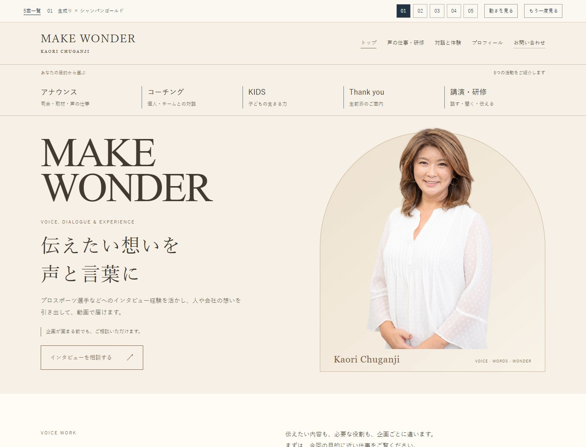
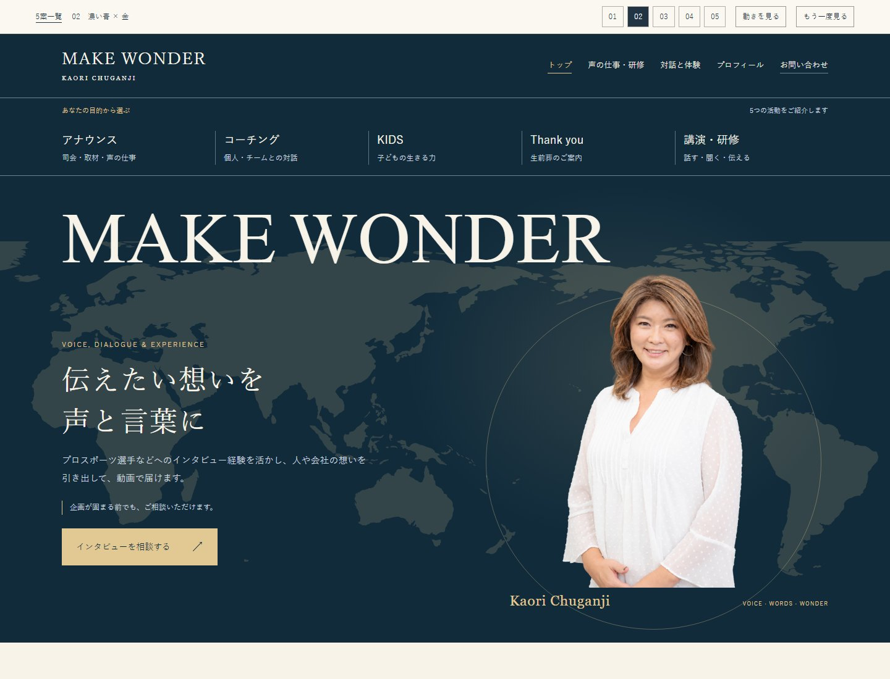
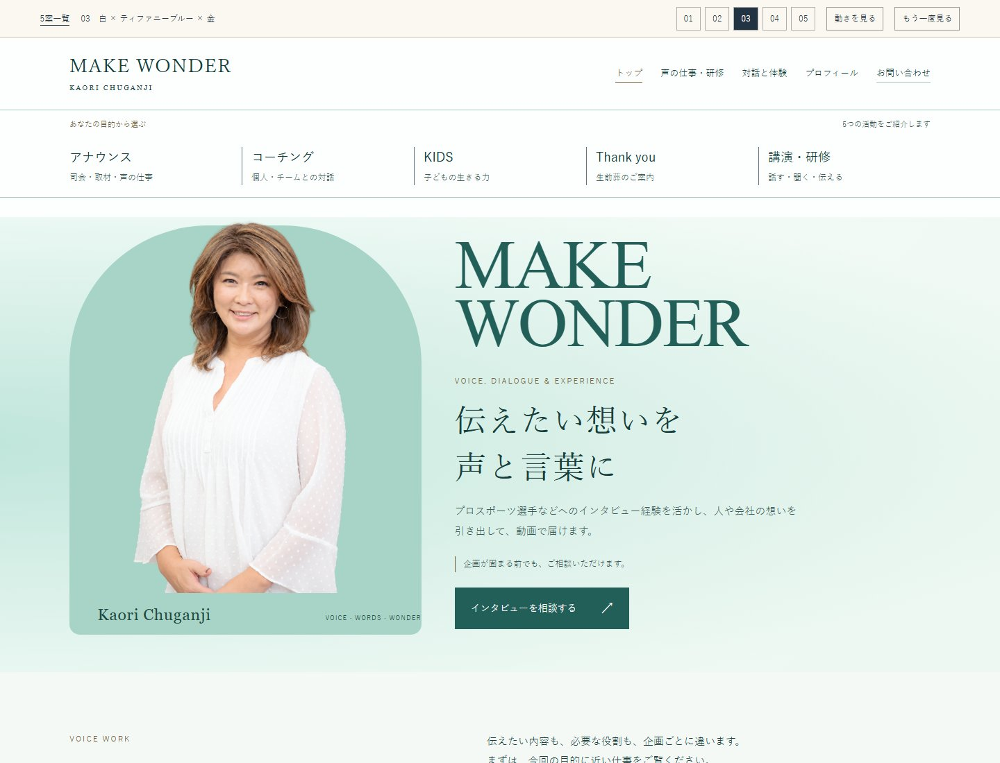
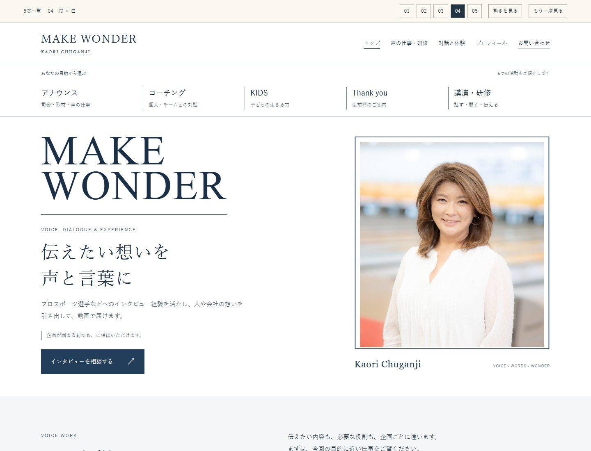
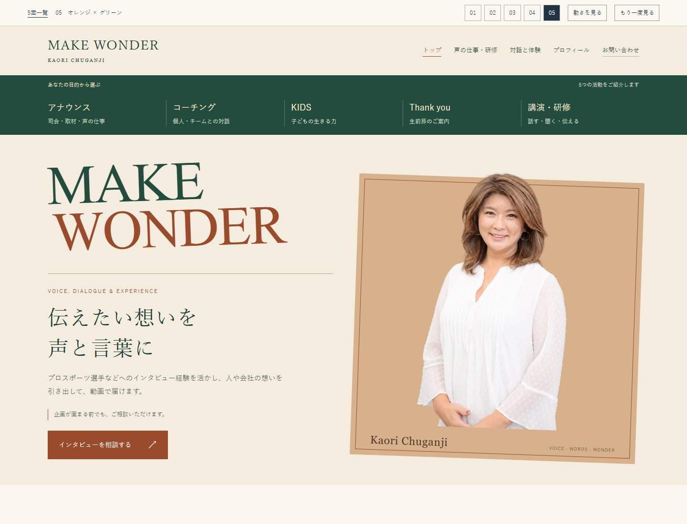

MAKE WONDER / DESIGN STUDIES
中願寺さんらしい一枚を
文章は同じ。色、配置、動きを変えた5つのトップ画面です。
気になる案を開いて、動きとスマホの見え方もご覧ください。

案 01
生成り × シャンパンゴールド
温かさのあるホテルのような品
動き：写真がゆっくり現れるこの案を開く ↗
案 02
濃い青 × 金
大きな英字と柔らかな光
動き：マウスに合わせて淡い光が移るこの案を開く ↗
案 03
白 × ティファニーブルー × 金
明るさと親しみやすさ
動き：背景の色がゆっくり流れるこの案を開く ↗
案 04
紺 × 白
仕事を頼みやすい端正な誌面
動き：写真の枠線が描かれるこの案を開く ↗
案 05
オレンジ × グリーン
クラシカルな個性と温かさ
動き：文字と写真が順に組み上がるこの案を開く ↗活動写真はAIで作成したイメージです。各案の下層ページへのリンクは共通の草案を開きます。選んだ案を残りのページへ広げます。
現在の草案を見る ↗